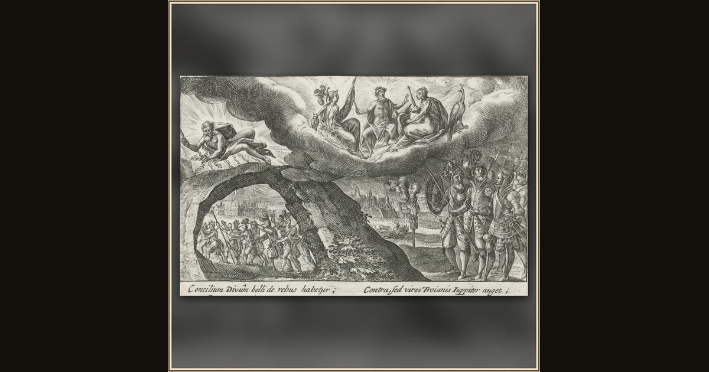

Jupiter helpt de Trojanen (Jupiter helps the Trojans)
Crispijn van de Passe (I) · 1613 · rijksmuseum
Zeus sits with Athena and Hera in the clouds over warring troops as he addresses the gods and forbids them to intervene for either army (8.1–27) Explore its place in Homer's Iliad, Book VIII, line 5.